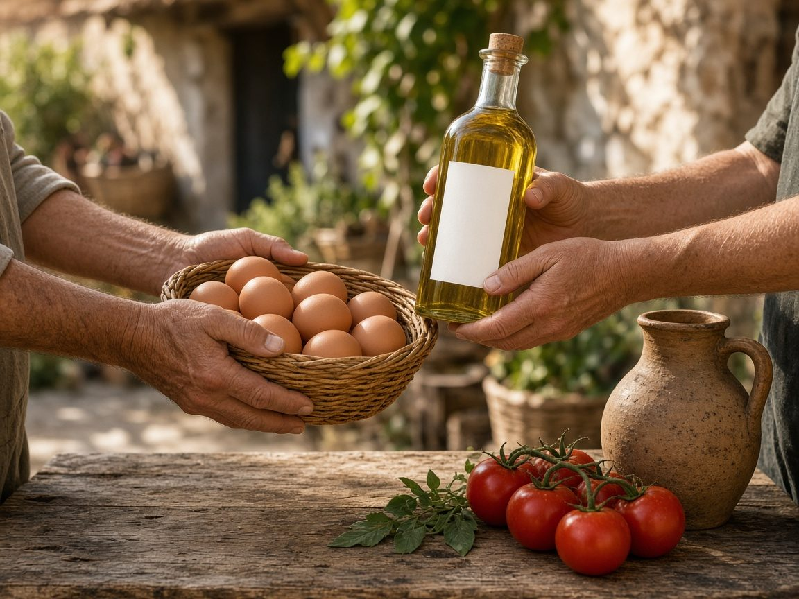
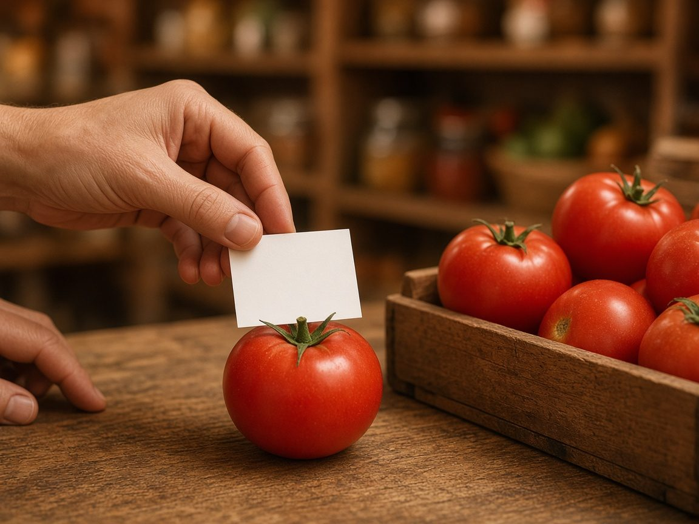
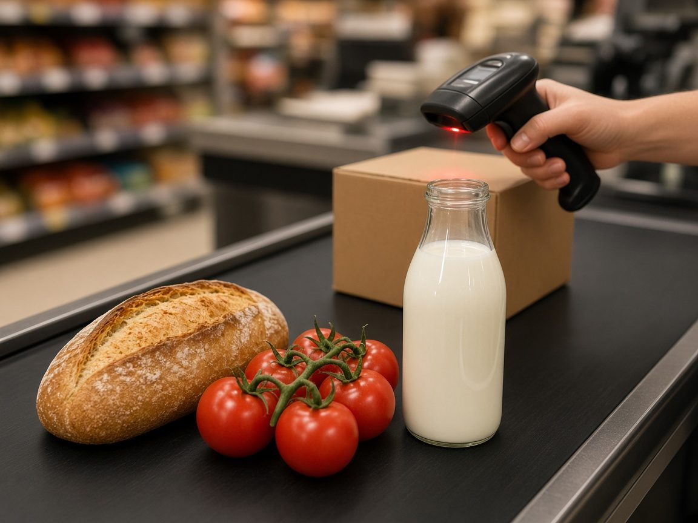

Te ha pasado mil veces: coges un producto, miras la etiqueta y das por hecho que ese número es «el» precio. Como si siempre hubiera estado ahí. Pero no. Durante muchísimo tiempo el precio no estaba escrito: se discutía, se inventaba en el momento y dependía de quién eras o de cómo negociabas.
Esta es la historia de cómo pasamos del trueque a la moneda, del regateo a la etiqueta fija… y de cómo esa etiqueta puede volver a cambiar en segundos. Al final, qué puedes hacer tú para no comprar a ciegas.
Antes del precio: intercambiar cosas
Imagina un mercado sin euros ni pantallas. Te sobran huevos y necesitas aceite; el vecino tiene aceite y quiere huevos. Os ponéis de acuerdo: trueque.
Funciona… hasta que no. ¿Cuántos huevos valen un cántaro? ¿Y si quien tiene la silla que quieres no necesita huevos? Hace falta algo que todo el mundo acepte como «vale por…».

Sal, monedas y billetes (y esa historia del «salario»)
La sal fue durante siglos un bien muy valioso: conservaba la comida sin neveras. Por eso se cuenta que «salario» viene de la sal y que a los soldados romanos se les pagaba con ella.
La etimología sí conecta salarium (la paga) con sal. Lo que no está tan claro —hay que decirlo con cuidado— es que cobraran en bloques de sal: la evidencia apunta a que cobraban sobre todo en moneda, y esa historia tan redonda está discutida. (The Conversation)
El camino general sí es claro: trueque, luego monedas, después billetes. El precio deja de ser «te cambio esto por aquello» y se convierte en un número.
Cuando el precio se negociaba cara a cara
Ahora imagina un mercadillo. Miras unos tomates. El vendedor dice un precio; tú frunces el ceño; él baja un poco; tú ofreces menos. Al final os encontráis a mitad de camino… o no. Dos personas pueden pagar distinto por el mismo kilo, según la prisa o la habilidad para regatear.
Durante muchos siglos eso era lo normal: el precio no era un derecho igual para todos, era una conversación. (SevillaInfo)
Durante muchísimo tiempo el precio no estaba escrito: se discutía, se inventaba en el momento y dependía de quién eras o de cómo negociabas.
Wanamaker y el precio fijo para todo el mundo
En la década de 1870, el comerciante John Wanamaker, de Filadelfia, dio un paso que hoy parece obvio: etiquetó con un precio cada producto. Acabó con el regateo. El mismo número para quien entrara. Además prometía en sus anuncios lo mismo que vendía y permitía devolver lo comprado en 30 días. (Wikipedia · Price tag; NPR Planet Money)
Hoy, en España, comprar online te da 14 días para desistir; en tienda física, devolver depende de la política de cada comercio, salvo que el producto venga defectuoso. (Administración.gob.es; OCU)
Hay quien atribuye el precio único a los cuáqueros, que consideraban poco ético cobrar distinto a cada cliente. Wanamaker lo popularizó; probablemente alguien más ya lo hacía, pero él lo hizo famoso. (Wikipedia · Price tag; NPR Planet Money)
Por primera vez, mucha gente pudo comparar sin pedir permiso.

Por primera vez, mucha gente pudo comparar sin pedir permiso.
De la etiqueta a mano al «bip» de la caja
Poner el precio a mano era lento. En los años 30, Ray Stanton Avery inventó la etiqueta autoadhesiva sensible a la presión: se pega con un toque, sin engomar. En 1935 fundó su empresa con esa idea. (Avery Dennison)
En 1959, Meto lanzó la primera etiquetadora manual, la «Jedermann»: imprimía y pegaba el precio de un golpe, ideal para el autoservicio. (Meto)
Y el 26 de junio de 1974, en un supermercado Marsh de Ohio, se escaneó por primera vez un código de barras: un paquete de chicles Wrigley’s. La caja ya podía leer el precio del sistema. (BBC Mundo; Smithsonian)

Por qué tantos precios acaban en ,99
¿Te has preguntado por qué ves 19,99 € en vez de 20 €?
Una explicación que se suele contar apunta a las cajas registradoras de finales del XIX: al obligar a dar cambio, el dependiente tenía que abrir el cajón y registrar la venta, y así era más difícil que se quedara el dinero. Con el tiempo, el ,99 también se volvió psicológico: el cerebro lee de izquierda a derecha y 19,99 se siente más cerca de «19 y pico» que de 20. (Libertad Digital; Xataka)
No es magia: es un hábito comercial que se nos ha quedado en la retina.
De las rebajas de enero al Black Friday
Las rebajas tampoco nacieron ayer. En España, Sederías Carretas (antecedente de Galerías Preciados) anunció el 2 de enero de 1940 su «venta post-balance»: liquidar lo no vendido tras hacer cuentas. (ABC)
El Black Friday es otra historia, importada. En EE. UU. se asocia al viernes tras Acción de Gracias; el nombre se popularizó en Filadelfia por el caos de compras, y más tarde por pasar de «números en rojo» a «números en negro». En España, Apple fue de las primeras en traerlo en 2010. (La Vanguardia; Expansión)
Noviembre huele a descuentos. La pregunta sigue siendo: ¿es un buen precio… o solo un precio de hoy?
Hoy: la etiqueta se vuelve pantalla
El papel está dejando paso a pantallas electrónicas en el lineal. Desde un ordenador central se cambia el precio en segundos.
Algunos ejemplos recientes:
- Walmart anunció en 2024 llevar etiquetas digitales a 2.300 tiendas en Estados Unidos. (Walmart)
- En España, Alcampo ha confirmado una inversión de 3,8 millones de euros para instalar más de 560.000 etiquetas en 84 supermercados antes de que acabe 2026. (Alcampo)
- Supermercados El Jamón planea cerca de 3 millones de etiquetas en toda su red durante tres años. (Economía Digital)
- Cadenas como Caprabo y Consum ya las usan desde hace años. (Xataka)
Las ventajas son claras: menos errores entre el lineal y la caja, menos papel y promociones al instante. La duda es otra.
La pregunta incómoda: ¿y si el precio cambia según la hora… o según quién eres?
Con una etiqueta electrónica, subir o bajar un precio cuesta casi nada. Puede servir para rebajar un yogur que caduca hoy. También podría, en teoría, variar según la demanda o la hora.
Que sepamos, a fecha de noviembre de 2026, ninguna gran cadena española ha anunciado precios dinámicos al estilo de los vuelos. Pero el debate existe. Según recoge Merca2, el 79 % de los consumidores españoles nota subidas en alimentación y mira con recelo cualquier variación. Alcampo tampoco ha anunciado precios dinámicos. (Merca2; Alcampo)
En EE. UU. ya se legisla. Maryland fue el primer estado en limitar los precios personalizados en súper. Nueva Jersey aprobó la «Fair Price Protection Act», que también suspende por un año la instalación de nuevas etiquetas electrónicas. (La Opinión; Telemundo 47)
Online el precio también se mueve
En internet lo vemos a diario: el mismo producto puede costar distinto según la hora o el día. Por eso, en este blog, cuando seguimos ofertas de electrodomésticos y hogar, anotamos si un precio se repite varios días. Un descuento de un día puede ser ruido; un buen precio que se mantiene se parece más a una oportunidad.
Qué puedes hacer tú
El mejor precio no es el primero que ves: es el que sigue siendo bueno al mirarlo otra vez.
No hace falta ser economista. Basta con un poco de calma:
- Compara siempre. El mejor precio no es el primero que ves: es el que sigue siendo bueno al mirarlo otra vez.
- No mires solo el porcentaje. Mira el precio final y, si puedes, el de hace unos días.
- Desconfía de la prisa. «Solo hoy» a veces es cierto… y a veces es teatro.
- En el súper, mira lineal y caja. Si hay etiquetas electrónicas, comprueba que pagas lo que viste en el pasillo.
- Compra con la cabeza. Sobre todo con electrodomésticos: un euro de diferencia hoy importa menos que equivocarte de modelo.
Es lo mismo que hacemos en Casa y Comparativa: mirar con calma y contrastar. El precio de la etiqueta —papel, pantalla o ficha online— es el final de una historia larga. Merece la pena conocerla antes de sacar la cartera.
Fuentes
- Precios personalizados · SevillaInfo
- Our pay is called a ‘salary’… · The Conversation
- Price tag · Wikipedia
- Episode 633: The Birth And Death Of The Price Tag · NPR Planet Money
- Devoluciones · Administración.gob.es
- Compras y devoluciones · OCU
- Our History · Avery Dennison
- La historia de Meto
- Código de barras · BBC Mundo
- Supermarket Scanner · Smithsonian
- Precios terminados en 99 · Libertad Digital
- Precios en ,99 · Xataka
- Rebajas de enero · ABC
- Origen Black Friday · La Vanguardia
- Black Friday llega a España · Expansión
- Digital shelf labels · Walmart
- Alcampo incorpora etiquetas electrónicas · Alcampo
- El Jamón etiquetas electrónicas · Economía Digital
- Precios dinámicos en súper · Xataka
- Debate precios dinámicos · Merca2
- Maryland · La Opinión
- Fair Price Protection Act · Telemundo 47